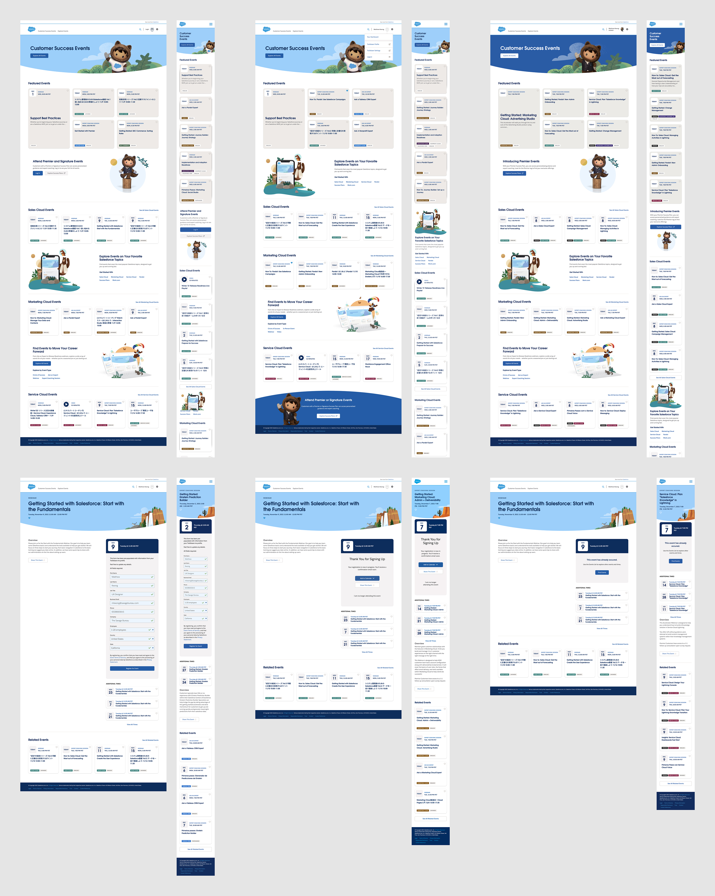
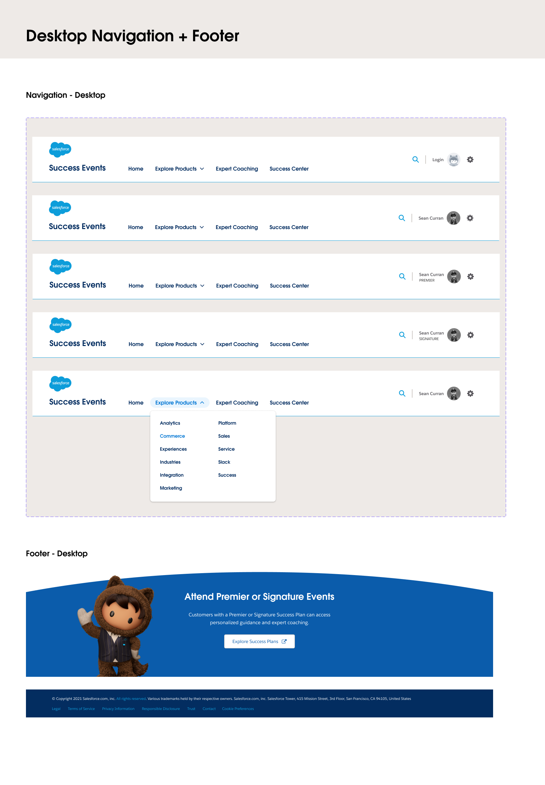
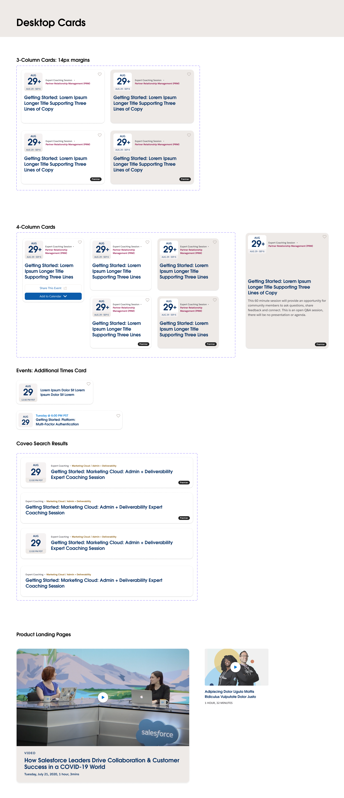
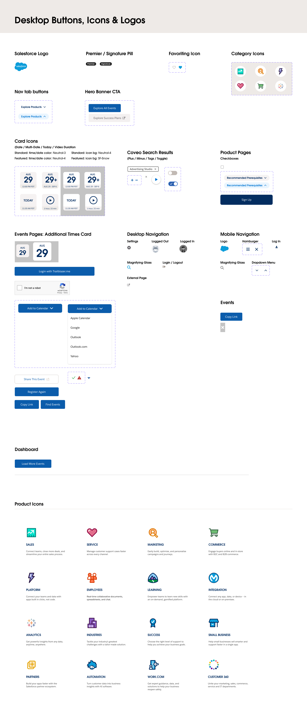
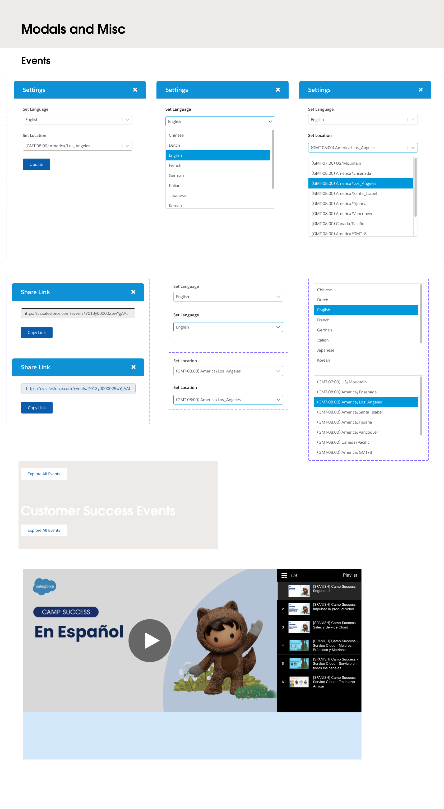

Salesforce Design System
Rebuilding a more efficent design system for the Salesforce Customer Success Event website.
My Role:
Product Designer
Duration:
3 Months
Team:
Salesforce
Savage Bureau
Skills:
Design Systems
Visual Design
Product Designer
3 Months
Salesforce
Savage Bureau
Design Systems
Visual Design
The previous design system did not provide the most recent components being used on the website, causing confusion and errors for the design team.
Additionally, many of the components were not responsive, causing broken and missing design components in the system.
To ensure that there wouldn't be problems in the future, the new Salesforce Customer Success design system was revised to reduce confusion and maximize efficiency.
To ensure we were creating the latest and greatest components in our new design system, I screen-captured every existing page type into Figma. This included multiple screen-captures of the different types of page styles if a user was logged-out, logged-in, or a signature/premier member and the entire user flow of registering for an event.

Many existing design components lacked editability and responsiveness that would require the designer to recreate the component entirely.
I created efficient components utilizing a combination of Figma's auto-layout, constraints, and variants features. Using these techniques helped create flexible components that were both easy to scale and change.
Additionally, it contains a variety of auto-layout and hug-contents settings that allow for fast text revisions without breaking the component entirely as everything stays intact and grows accordingly, based on the changes you make.
A large component feature I worked on was the Events Registration Form. I created a flexible component that allows the data entries to be changed through Figma component variants. Designs for default, invalid, and valid states are all accounted for and can easily be changed with a few clicks.
In the end, we completed an up to date design system for both desktop and mobile devices.
To ensure that the components were easily editable, large components like as cards are interlaced with smaller components such as icons or tags that are reused in multiple other components.




The biggest challenge I had while working on this project was the intimidation of tackling this from ground zero. Other challenges included the tediousness of screen-capturing every page type and its user flow as it required a lot of attention, making sure I recreated all components that should be accounted for.